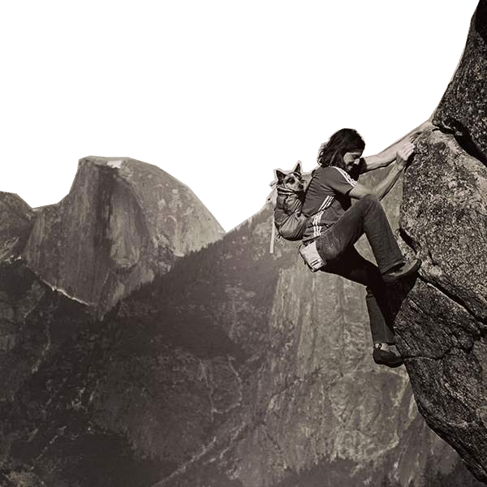

Dean Spaulding Potter was an American rock climber, alpinist, BASE jumper, and highliner, who invented the extreme sport of FreeBASE. He completed many technically hard first free ascents, free solo ascents, speed ascents, and enchainments in Yosemite National Park and in Patagonia.
Potter climbed many new routes and completed many solo ascents in Yosemite and in Patagonia. He free-solo climbed a small part of El Capitan in Yosemite, where he pioneered a route he called Easy Rider by climbing down the slabby upper pitches of the route Lurking Fear (hardest moves rated grade 5.10a) and then traversed Thanksgiving Ledge to complete the last six pitches and six hundred feet of the route Free Rider. This was the first major section of El Capitan to be free soloed, but his path avoided the significantly more challenging climbing on what is the easiest way up El Capitan below (several 5.12 pitches, with difficulty up to 5.12d on Free Rider).

Click the button to generate a quote